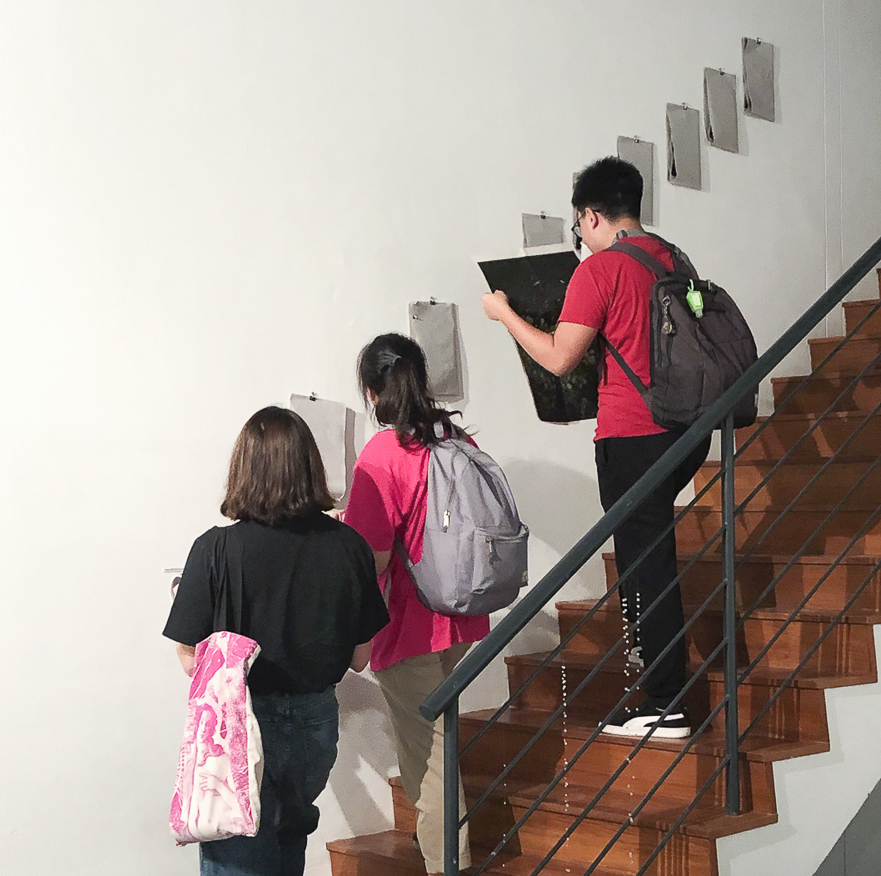

2019-ongoing
Photobook, Artwork Print and Binder Clips
What do we make of these things?
Things that accompanied us. Things that fed us. Things that served us.
Things that we left. Things that we used. Things that we forgot.

Installation view at Sensitivities, 2020
Installation view at Sensitivities, 2020
Photo credits: Syahrul Anuar